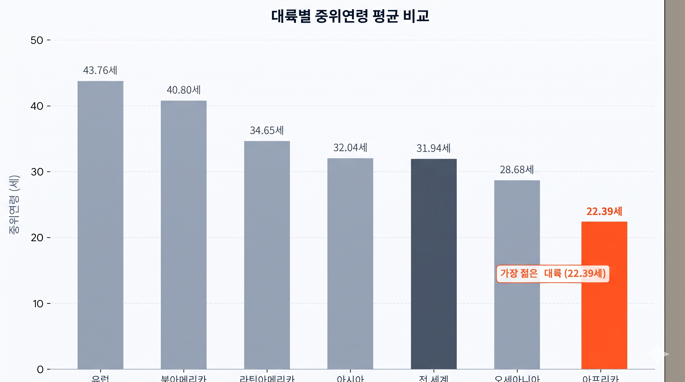
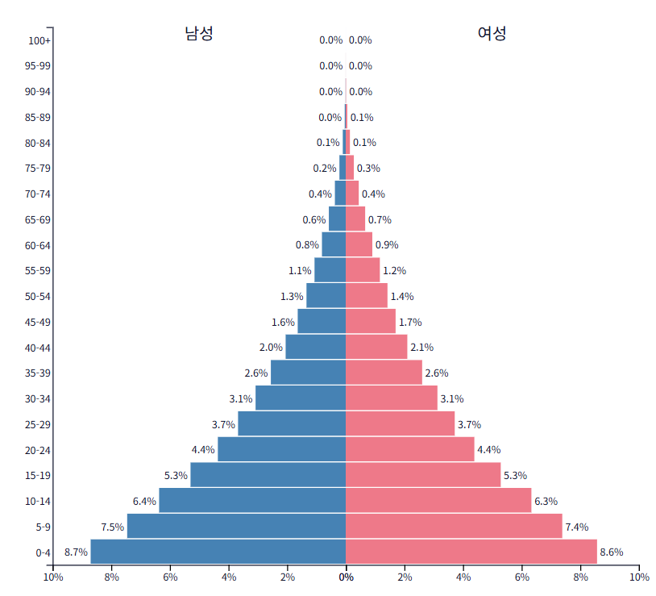

고정관념 깨기
"인구만 많고 먹여 살릴 부양 부담만 가득하다?"
세계에서 가장 낮은 중위 연령과 역동적인 피라미드형 인구구조를 통해 대륙의 진짜 활력을 진단해 보세요.
1. 중위 연령 비교 지도
연령 중간값 분석

images/pop_median_age.png 사진 위치
한국 / 유럽 (초고령화 진입)
약 45 ~ 48세
아프리카 (전 세계 최저 연령)
약 19.7세
중위 연령 19.7세의 지리적 의미
중위 연령이란 전체 인구를 나이순으로 세웠을 때 정중앙에 서 있는 사람의 나이입니다. 유럽과 한국은 45세를 넘어 고령화 부담이 커지는 반면, 아프리카는 전체 인구의 약 70%가 30세 이하로 전 세계에서 가장 역동적인 청년 대륙입니다.
인구 중간값 비교
세계에서 가장 젊은 대륙
2. 인구구조 피라미드 비교
선진국 vs 아프리카

images/pop_structure_pyramid.png 사진 위치
선진국형 구조
역삼각형 / 항아리형
유소년층 급감, 노년 부양 급증
아프리카형 구조
정통 피라미드형
유소년·청년층이 가장 두터움
피라미드형 인구구조의 지리적 의미
아프리카는 유소년 인구가 많아 인구 부양 부담만 높다는 편견이 있을 수 있습니다. 하지만 이들은 자라나 향후 수십 년간 글로벌 경제를 이끌어갈 생산연령층이 됩니다.
인구 구성비 분석
생산가능인구의 보고
자료 출처: UN 세계 인구 전망 (UN World Population Prospects)